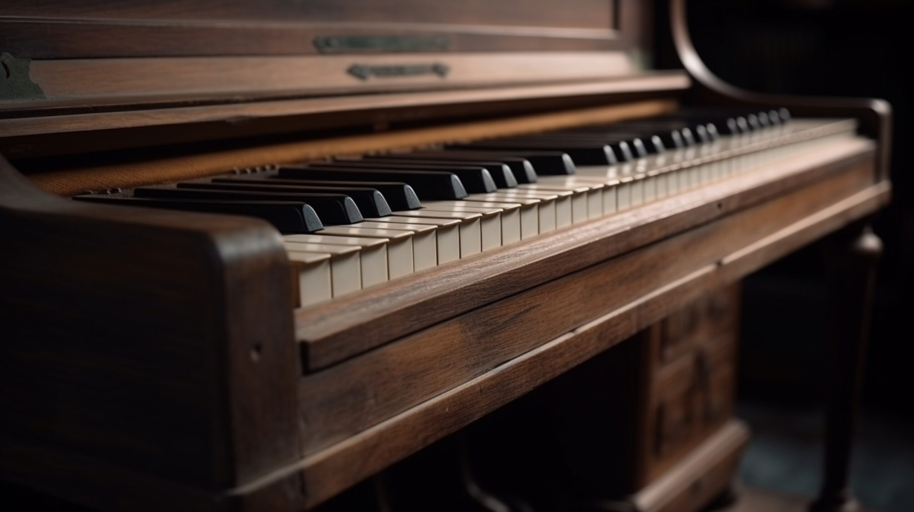

Piano
piyano , klavyeden çalıştırılan keçe kaplı çekiçlerle vurulduğunda ses çıkaran tel tellere sahip bir klavyeli müzik aleti . Standart modern piyano 88 tuşa sahiptir ve yedi tam oktav artı birkaç tuştan oluşan bir pusulaya sahiptir.Tellerin titreşimi birses tahtası, tellerin gerildiği bir köprü vasıtasıyla ; ses tahtası sesi yükseltir ve ton kalitesini etkiler.tellere vuran çekiçler tuşların en uçlarında duran bir mekanizmaya sabitlenmiştir; çekiç ve mekanizma "eylemi" oluşturur. Mekanizmanın işlevi çekicin hareketini hızlandırmak, tellerden geri sekerken yakalamak ve bir sonraki saldırı için pozisyonunda tutmaktır. Modern çekiçler keçe ile kaplıdır; daha önce deri kullanılıyordu. Modern piyanonun, tellerin muazzam gerginliğine dayanabilen dökme demir bir çerçevesi vardır; erken piyanoların ahşap çerçeveleri vardı ve bu nedenle yalnızca hafifçe tel takılabiliyordu. Bu nedenle modern piyanolar, 18. yüzyıldaki piyanolardan çok daha gürültülüdür; bu, kısmen 19. yüzyıl konser salonlarının büyüklüğünden kaynaklanan bir artıştır. Çoğu piyanoda bulunan üç pedaldan,Sağdaki damper pedalı, tellerin üzerindeki tüm keçe damperleri kaldırarak hepsinin serbestçe titreşmesini sağlar; sol pedal, çekicin her tenor ve tiz tuşunun iki veya üç unison telinden yalnızca birine vurmasını sağlamak için klavyeyi ve hareketi yanlara doğru kaydırır ( bas notalar yalnızca tek telli); ve orta pedal (genellikle kuyruklu piyanolarda bulunur ancak bazı piyanolarda da bulunur) genellikle pedala basıldığında yalnızca basılı olan tuşların damperlerini tutar.İcat önceliği kredisi çok tartışılmıştır, ancak bunun ait olduğu konusunda çok az şüphe vardırYaklaşık 1709'da Floransa'da gravecembalo col piano e forte ("yumuşak ve yüksek sesli klavsen") adlı eserini tasarlayan Bartolomeo Cristofori . Bu, klavye vuruş eylemini kullanan ilk enstrüman değildi; piyano ilkesinin örnekleri yaklaşık 1440'ta mevcuttu. Cristofori, 1726'da modern piyano eyleminin tüm temellerine ulaşmıştı ve modern piyanonun kökeni de Cristofori'nin piyanosudur.
